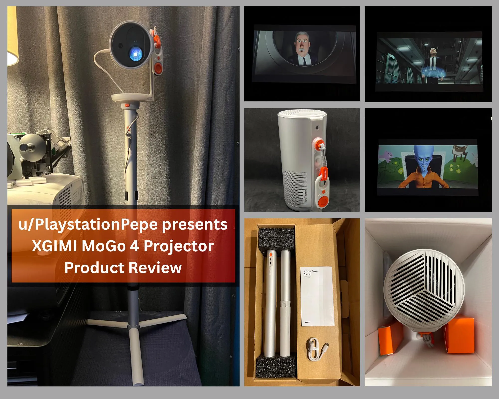

Projector Review
XGIMI MoGo 4 (LED) Portable Projector Review
Disclosure: As an XGIMI Partner Affiliate, I earn from qualifying purchases.

Hi everyone, I’m back with a review of the new XGIMI MoGo 4. This is one of XGIMI’s latest portable projectors. The XGIMI MoGo 4 is a LED-based DLP projector weighing in at 2.9 lbs. It’s very compact and close to the size of a stainless steel tumbler cup. Perfect for use around the house and even on the go.
I found that unboxing the projector and setting it up was pretty straightforward. The box contained the MoGo 4 Projector, a compact portable remote, a sunset mood filter lens attachment, full-size backlit Bluetooth remote with two AAA batteries, and user manual with warranty information. The MoGo 4 even had around 20% charge out of the box, which allowed me to power it on and start the setup process. This projector runs on Google TV so the initial setup was very similar to setting up a streaming device or Google Android TV.
Where to buy
Key specs
- Light source: LED (DLP)
- Weight: 2.9 lbs
- Battery: built in, up to 2.5 hours on eco mode, 5+ hours with the optional MoGo PowerBase
- Smart platform: Google TV
- Speakers: dual 6 watt Harman Kardon
- Ports: full size HDMI 2.0 with ARC, USB 2.0
- Wireless: WiFi and Bluetooth audio
- Setup: auto focus and auto keystone
Battery Life
The MoGo 4 has a built in battery that lasts 2.5 hours on eco mode and with the optional MoGo Powerbase you can extend video playback for up to 5+ hours.
Using the higher brightness, though it reduces battery time, allowed me to use the projector in brighter room environments without having to plug in the unit.
Eco brightness level starts at 3/10 on the scale and you can lower it all the way to 1 if you’d like to extend the battery life even further. I found that the 3/10 brightness level was pretty adequate for most indoor dim environments, but I preferred the higher brightness for when I had the room lights on.
At its brightest setting on the scale, I was really satisfied with how the image looked on different surfaces. One morning I even brought it to the kitchen table and ate breakfast while watching the morning news on my blinds. I never would’ve thought that using a portable projector could be this convenient.
Image Quality
For testing, I watched a few movies that I was familiar with and was really impressed with the out of the box color accuracy. HDR playback is supported on this projector via streaming apps so being able to watch HDR content was a great addition. Image focusing and overall sharpness was really great and the projector reacted fast whenever I moved between wall surfaces and my ceiling.
MoGo 4 Offers standard color presets and an advanced custom mode to really dial the colors in.
I found that even on a 150” screen, approx. 20ft. away, the unit was able to keep up with most movies. Animation looked better because of the vibrant colors. I’d definitely recommend using this projector on a 120” screen or smaller in order to maintain the image brightness you need.
For gaming I found that the MoGo 4 was able to keep up with fast paced gaming with no issue.
Sunset Mood Filter
- XGIMI includes one lens filter with the projector and it’s the sunset mood one. I found this to be pretty neat especially for the plain wall and ceiling. Definitely a unique accessory!
Keystone
- The unit features auto keystone and auto focus. I encountered no issues with that.
Sound Quality
The two 6-watt Harman Kardon speakers make listening to music enjoyable and provides full range sound for movie use which is really nice. Dialogue was very clear with this projector.
For outdoor use especially if you’re sitting far away from the unit I’d recommend using a larger Bluetooth speaker to get the coverage you need.
Additional Features
The projector features Bluetooth audio, WiFi for connecting to smart apps, a full size HDMI 2.0 Port with ARC (Audio Return Channel) and a USB 2.0 port for media playback.
- Audio Return Channel allows you to connect an HDMI cable to the projector and send audio to a Home Theater Receiver or Soundbar
I found that connecting to WiFi and Bluetooth to be pretty easy. Didn’t have any issues with that. HDMI ARC allowed me to control my home theater receiver using the projector remote.
PowerBase Stand
- XGIMI’s new projector tripod makes setting up the projector super easy. Connect two pieces of the tripod, click to connect the bottom of the projector in and you’re ready to start viewing with the extended battery pack built in. Using the included 65W power adapter from the projector, charging the battery pack was very quick, and powering the projector from the pack was easy.
Overall thoughts
After extensive use, the XGIMI MoGo 4 stands out as a truly versatile and high-performing portable projector. Its compact design, long-lasting battery, and seamless integration with Google TV make on-the-go projection incredibly easy, while its impressive image and sound quality ensure a satisfying viewing experience every time. If you're looking for a powerful and reliable grab-and-go unit, I can confidently recommend the MoGo 4.
Where to buy
Disclosure: As an XGIMI Partner Affiliate, I earn from qualifying purchases.
For more info or questions about this projector, or help picking a portable for your space, book a consultation or contact me and I'd be happy to offer some suggestions.
This review was first posted in r/BudgetProjectors.